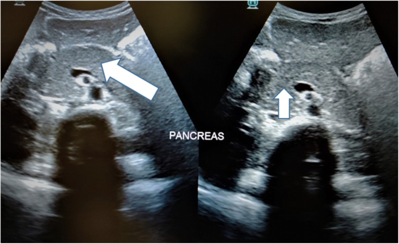
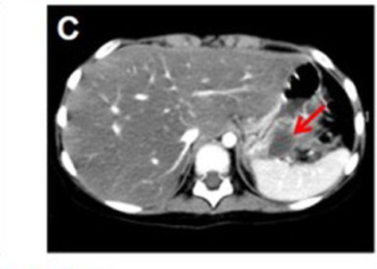
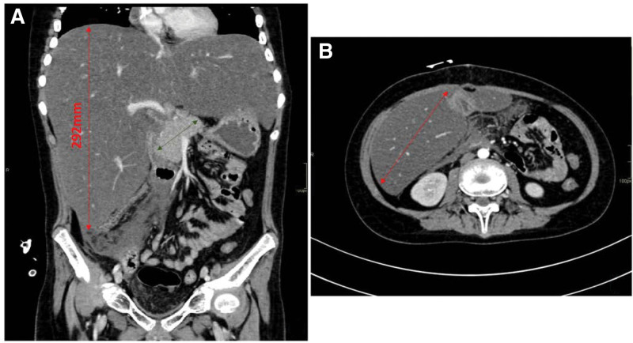

6171 — Viêm tụy cấp do asparaginase ở trẻ ALL: hình ảnh có thể bình thường sớm và quyết định dùng lại thuốc / Asparaginase-associated pancreatitis in paediatric ALL
Tags: pattern:viem-tuy pattern:phu-tuy pattern:hoai-tu-tuy pattern:gia-nang-tuy pattern:tu-dich-quanh-tuy vung:tuy vung:o-bung protocol:sieu-am-bung protocol:CT-bung-co-can-quang protocol:MRI-bung score:Ponte-di-Legno score:CTSI score:CTCAE
Mức chắc chắn (certainty): tổng hợp y văn (literature synthesis) — ghép dữ liệu từ 2.448 bệnh nhân ALL 1–45 tuổi (NOPHO ALL2008, J Clin Oncol 2020, PMC6953441), 4.925 trẻ hai thử nghiệm COG (AALL0232/AALL0434, Blood Adv 2026, PMC13382259), 474 trẻ Hà Bắc (PMC12480329), 353 trẻ Đài Loan (PMID 34718353), 322 trẻ Ả Rập Xê Út (PMC12398873), 352 trẻ Trung Quốc (PMC13226028), tổng quan Haematologica 2026 (PMC12775779), 3 ca nguyên văn có ảnh (PMC12163796, PMC11573588, PMC10489477, PMC7236281). Không có thử nghiệm ngẫu nhiên về dùng lại asparaginase; các ngưỡng dùng lại là đồng thuận, chỗ suy luận được ghi rõ.
Câu chốt: viêm tụy do asparaginase (asparaginase-associated pancreatitis, AAP) là biến cố quyết định sống còn của phác đồ, không chỉ là "đau bụng do hóa trị": (1) gặp ở 1–7,4% trẻ ALL, tăng theo tuổi — 7,0% ở 1–9,9 tuổi, 10,1% ở 10–17,9 tuổi (NOPHO); (2) khởi phát trung vị 10,5 ngày (1–26 ngày) sau liều PEG-asparaginase, sau trung vị 3–5 liều; (3) hình ảnh có thể âm tính đúng lúc cần chẩn đoán — CT chỉ dương 25%, siêu âm 43% trong một đoàn hệ 322 trẻ, và một ca CT ngày 14 chỉ "giảm tỷ trọng nhẹ đuôi tụy, thể tích không tăng" nhưng ngày 22 đã hoại tử tụy; (4) giả nang xuất hiện 26–27% (tới 60%), hoại tử trong tuần đầu 27,9%, nên câu hỏi thật là theo dõi gì sau đợt cấp và có dùng lại thuốc hay không.
Phân vai với bài khác: 6135 phủ viêm tụy cấp ở trẻ nói chung (INSPPIRE, NASPGHAN, ARP/CP), 6136 phủ bảng Badalov – thuốc nào gây tụy. Bài này chỉ đi sâu chuỗi quyết định của AAP: thời điểm – hình ảnh âm tính sớm – phân độ – theo dõi di chứng – dùng lại hay bỏ asparaginase.
1. Tổng quan bệnh học – cơ chế hình ảnh (TẠI SAO hình ảnh đến muộn)
1.1 Asparaginase giết tế bào nang tụy bằng cách nào
- Asparaginase (L-asparaginase E. coli, pegaspargase, Erwinia) thủy phân asparagine huyết tương → ức chế tổng hợp protein ở mọi tế bào, nhưng tế bào nang tụy có tốc độ tổng hợp enzym tiêu hóa rất cao nên nhạy nhất: hết protein để đóng gói enzym → không bào hóa, rối loạn bài tiết, rồi tự tiêu hóa mô tụy (autodigestion). Đây là độc tính của bản thân phân tử asparaginase, không phải của tá dược — đổi sang Erwinia chủ yếu để xử lý dị ứng, không được chứng minh là hết nguy cơ viêm tụy (suy luận từ cơ chế; chưa có thử nghiệm so sánh tỷ lệ AAP giữa các chế phẩm).
- Đường thứ hai — tăng triglyceride: asparaginase làm tăng VLDL và giảm hoạt tính lipoprotein lipase → tăng triglyceride máu, có khi > 1.000 mg/dL, tự nó gây viêm tụy. Ca nguyên văn dưới đây có TG 8,63 mmol/L (~763 mg/dL) đúng lúc chẩn đoán.
- Đường thứ ba — huyết khối vi mạch: asparaginase giảm antitrombin III và fibrinogen → vi huyết khối trong mao mạch tụy, làm hoại tử không ngấm thuốc rõ hơn là phù đơn thuần.
- TẠI SAO hình ảnh đến muộn: chẩn đoán viêm tụy cấp là chẩn đoán lâm sàng – sinh hóa (đau + lipase ≥ 3 × ULN + hình ảnh, cần ≥ 2/3 theo đồng thuận Ponte di Legno). Trong 24–72 giờ đầu, tổn thương là phù kẽ — chênh lệch tỷ trọng với nhu mô lành chỉ vài HU, dưới ngưỡng nhìn thấy của CT không cản quang; hoại tử mới tạo ra vùng giảm tỷ trọng rõ và dịch quanh tụy mới đẩy mỡ quanh tụy thành các dải tăng tỷ trọng. Vì vậy CT bình thường trong 48–72 giờ đầu KHÔNG loại trừ AAP.
1.2 Ngưỡng định lượng phải nhớ (Ponte di Legno 2016 / Atlanta 2012)
| Mốc | Ngưỡng / định nghĩa | Ý nghĩa thực hành |
|---|---|---|
| Chẩn đoán AAP | ≥ 2/3: (1) đau bụng điển hình; (2) amylase/lipase ≥ 3 × ULN; (3) hình ảnh (US/CT/MRI) phù hợp | Không cần hình ảnh nếu đã có đau + men ≥ 3 × ULN |
| Cửa sổ thời gian | trong 4 tuần (28 ngày) sau liều asparaginase gần nhất; nhiều trung tâm dùng 35 ngày | Đau bụng sau 6 tuần không quy cho asparaginase nếu không có bằng chứng khác |
| Hình ảnh dương | CT 25%, siêu âm 43% ở 322 trẻ (Ả Rập Xê Út) | Ưu tiên siêu âm trước; CT khi nghi biến chứng |
| Hoại tử sớm | 27,9% (12/43) hoại tử trong tuần đầu; 39,5% (17/43) có suy tạng hoặc hoại tử | CT có cản quang sớm nếu sốc/giảm tiểu cầu/tăng CRP mạnh |
| Giả nang | 26% trung bình (tới 60%), NOPHO 27% (45/167) | Siêu âm/MRI theo dõi ≥ 4 tuần sau đợt cấp |
| Men kéo dài | lipase vẫn ≥ 3 × ULN sau 72 giờ ở 22/47 ca | Là tiêu chí AAP nặng, quyết định không dùng lại thuốc |
2. Mẫu hình + chẩn đoán phân biệt theo vị trí (gamut)
2.1 Mẫu hình trên từng phương thức
- Siêu âm (đầu tay): tụy to, giảm âm, đều (phù) ± dải tăng âm quanh tụy (thâm nhiễm mỡ) ± dịch quanh tụy. Ca BMC Pediatr 2020 (PMC7236281) là ví dụ trơn: "tụy to nhẹ, giảm âm đều, ống tụy chính bình thường, thâm nhiễm mỡ tối thiểu" ở trẻ đái tháo đường nhiễm toan ceton đang dùng asparaginase — tức cùng một hình ảnh, hai nguyên nhân.
- CT có cản quang: phù lan tỏa hoặc ổ giảm tỷ trọng (hoại tử), dịch quanh tụy, dày cân Gerota, tụ máu sau phúc mạc; đánh giá hoại tử và biến chứng tốt hơn siêu âm, nhưng không dùng để loại trừ sớm.
- MRI/MRCP: ống tụy, nang – hoại tử có vách, không bức xạ — hợp trẻ cần chụp lặp; MRCP để loại trừ tắc mật/pancreas divisum khi tái phát.
2.2 Gamut theo bối cảnh (trẻ đang điều trị ALL, đau bụng)
- AAP — sau liều asparaginase 1–4 tuần, đau thượng vị lan sau lưng, nôn; men tụy tăng; có thể kèm tăng TG, tăng đường huyết, huyết khối.
- Viêm tụy do corticoid (giai đoạn induction) — cùng phác đồ, không có mốc liều asparaginase; thường nhẹ, men tăng vừa.
- Tăng triglyceride đơn thuần (bài 684) — tụy có thể chưa viêm; TG rất cao, huyết thanh đục; chẩn đoán bằng TG chứ không bằng men.
- Bệnh mật – sỏi/túi mật cấp (bài 6146) — đau hạ sườn phải, siêu âm thành túi mật dày, sỏi; amylase có thể tăng nhẹ.
- Nhiễm trùng (Coxsackie, Mycoplasma, mumps, SARS-CoV-2) — sốt, đau lan tỏa, dịch kẽ; dịch tễ.
- Thâm nhiễm bạch cầu/tái phát u — tụy to không đều, khối, không đau điển hình; đáp ứng kém với nhịn ăn; cần tế bào học nếu kéo dài.
- Thủng ruột/viêm ruột trung tính (neutropenic enterocolitis) — đau + sốt + giảm bạch cầu hạt; khí trong thành ruột, không phải dịch quanh tụy.
- Nhiễm toan ceton do đái tháo đường (do corticoid/asparaginase) — đau bụng + nôn + thở nhanh; amylase/lipase có thể tăng nhẹ do cô đặc máu → dễ chẩn đoán nhầm AAP.
2.3 Gamut theo vị trí tổn thương trên CT
- Đầu tụy: AAP, sỏi ống mật chủ, u đầu tụy (hiếm ở trẻ).
- Thân/đuôi tụy: AAP (ổ giảm tỷ trọng đuôi tụy là vị trí hay gặp trong ca nặng), tăng TG, viêm tụy do thuốc khác.
- Quanh tụy – hậu cung mạc nối (lesser sac): dịch cấp (APFC), giả nang, hoại tử có vách (WON), áp-xe (có khí).
- Rãnh tá tràng – mạc treo: dịch lan xuống hố chậu phải → đau giống viêm ruột thừa (cạm bẫy số 1 ở trẻ).
3. Bảng so sánh phân biệt (ma trận đối chiếu)
| Thực thể (entity) | Hình ảnh điển hình | Chốt vào (rule-in) | Chốt loại (rule-out) | Gợi ý xác nhận |
|---|---|---|---|---|
| AAP | Tụy phù lan tỏa hoặc ổ giảm tỷ trọng; dịch quanh tụy; có thể bình thường < 72 giờ | Đau thượng vị + lipase ≥ 3 × ULN trong 4 tuần sau liều asparaginase | Hình ảnh bình thường không loại trừ; đau – men bình thường sau 6 tuần → nghĩ nguyên nhân khác | Lipase, TG, glucose; US trước, CT khi nặng |
| Viêm tụy do corticoid | Phù nhẹ, ít dịch, không hoại tử | Đang induction corticoid, không có mốc liều asparaginase, men tăng vừa | Không có đau điển hình + men < 3 × ULN → không chẩn đoán | Ngừng/tạm giảm corticoid, theo dõi men 48 giờ |
| Tăng triglyceride máu | Tụy bình thường hoặc phù; huyết thanh đục, CT mỡ gan | TG > 1.000 mg/dL (ngưỡng gây viêm tụy) ± đau | TG < 500 mg/dL → không quy cho TG | TG, cholesterol, lipase; bài 684 |
| Sỏi/túi mật cấp | Sỏi, thành túi mật ≥ 3 mm, dịch quanh túi mật, ống mật chủ giãn | Sỏi + thành túi mật dày + Murphy siêu âm | Không sỏi, ống mật không giãn → ít nghĩ mật | Siêu âm, MRCP nếu men gan tăng |
| Thủng ruột/viêm ruột trung tính | Khí trong thành ruột, thành ruột dày, dịch tự do; không có phù tụy | Khí ngoài lòng ruột + giảm bạch cầu hạt + sốt | Không khí tự do, tụy bình thường → loại | CT bụng có cản quang, X-quang đứng |
| Giả nang tụy (biến chứng, không phải chẩn đoán khác) | Ổ dịch đồng nhất, thành mỏng, ≤ 15 HU, ≥ 4 tuần sau đợt cấp, không có mảnh hoại tử | Ổ dịch đơn thuần + vách + ≥ 4 tuần + không hoại tử | Có mảnh đặc không ngấm thuốc bên trong → WON, không phải giả nang | US/MRI; amylase dịch rất cao |
| Hoại tử có vách (WON) | Ổ dịch không đồng nhất, mảnh hoại tử 20–40 HU không ngấm thuốc, vách dày | Mảnh đặc trong ổ dịch ≥ 4 tuần | Ổ dịch thuần nhất → giả nang | CT/MRI; chỉ can thiệp khi nhiễm/ chèn ép |
Ba dấu hiệu định vị giúp đọc đúng trên mặt cắt ngang
- Dịch quanh tụy vs dịch màng phổi: dịch trong túi mạc nối nằm trước thận trái, sau dạ dày; dịch màng phổi nằm ngoài cơ hoành, có dấu crus và không đẩy dạ dày ra trước.
- Dịch quanh tụy vs dịch tự do (ascites): dịch tự do chảy vào rãnh gan–thận (Morison) và túi cùng Douglas; dịch tụy khu trú quanh tụy, đẩy dạ dày ra trước và không lấp đầy rãnh gan–thận.
- Giả nang vs nang tụy thật: nang thật có biểu mô, thường đa ổ, thành mỏng, không liên quan đợt cấp; giả nang xuất hiện sau đợt đau cấp, amylase dịch rất cao.
4. Protocol chụp + hệ phân độ/điểm chuẩn hóa
4.1 Protocol thực hành (theo thứ tự, không chụp thừa)
- Siêu âm bụng ngay khi nghi AAP: tụy to/giảm âm, dịch quanh tụy, túi mật – ống mật (loại trừ nguyên nhân mật). Không cần nhịn ăn trước ở trẻ nhỏ.
- X-quang bụng đứng nếu nôn nhiều/giảm nhu động: loại trừ thủng/thoát vị/tắc ruột, không dùng để chẩn đoán tụy.
- CT bụng có cản quang khi: sốc/giảm tưới máu, đau không giảm sau 48–72 giờ, nghi hoại tử/tụ máu, hoặc cần đo áp lực ổ bụng. Lát mỏng ≤ 1–2 mm, thì tĩnh mạch cửa (55–70 giây), không dùng CT để loại trừ AAP sớm.
- MRI/MRCP khi: tái phát, nghi tắc mật/pancreas divisum, theo dõi giả nang/WON ở trẻ cần chụp lặp (không bức xạ). Chuỗi: T2 fat-sat + DWI + MRCP.
- Theo dõi di chứng: siêu âm lúc ra viện, 4 tuần, rồi 3 tháng nếu có giả nang; đo HbA1c/glucose và elastase-1 phân sau ≥ 3 tháng nếu đợt nặng (suy tụy nội – ngoại tiết).
4.2 Phân độ — ba hệ, đừng trộn
| Hệ | Cách chia | Ngưỡng then chốt | Dùng khi |
|---|---|---|---|
| Ponte di Legno (AAP) | AAP nặng nếu: suy tạng, hoại tử, giả nang, men ≥ 3 × ULN sau 72 giờ, cần can thiệp | Men kéo dài > 72 giờ; di chứng hình ảnh | Quyết định không dùng lại asparaginase |
| Atlanta 2012 (sửa đổi) | Nhẹ / trung bình–nặng / nặng | Suy tạng > 48 giờ = nặng | Mô tả bệnh cảnh, tiên lượng |
| CTSI (Balthazar) | 0–10 điểm: phù 0–2, dịch 0–4, hoại tử < 30% = 2, 30–50% = 4, > 50% = 6 | ≥ 7 = nặng | Nghiên cứu/so sánh; chưa chuẩn hóa cho trẻ |
- CTCAE v5.0 dùng trong thử nghiệm ALL: viêm tụy grade 3 = đau nặng, nôn, cần can thiệp; grade 4 = biến chứng đe dọa tính mạng. Đoàn hệ Ả Rập Xê Út: 56% grade 2, 44% grade 3.
- Suy tạng ở trẻ: dùng tiêu chí pSOFA, không dùng SOFA người lớn; hạ calci máu, tăng glucose, giảm albumin là các dấu hiệu nặng sớm.
4.3 Sơ đồ quyết định (Mermaid)
flowchart TD
A["Trẻ ALL đau bụng sau liều asparaginase"] --> B{"Lipase >= 3 x ULN<br/>hoặc amylase >= 3 x ULN?"}
B -->|Không| C["Tìm nguyên nhân khác:<br/>mật, nhiễm, DKA, thủng ruột"]
B -->|Có| D["AAP - không cần hình ảnh để chẩn đoán"]
D --> E["Siêu âm + xét nghiệm:<br/>TG, glucose, Ca, albumin, đông máu"]
E --> F{"Sốc, đau > 72 giờ,<br/>giảm tiểu cầu, nghi hoại tử?"}
F -->|Không| G["Điều trị hỗ trợ:<br/>nhịn ăn ngắn, dịch, giảm đau"]
F -->|Có| H["CT bụng có cản quang<br/>lát mỏng <= 2 mm"]
H --> I{"Hoại tử, dịch lớn,<br/>hoặc áp lực ổ bụng > 20 mmHg?"}
I -->|Không| G
I -->|Có| J["Theo dõi sát / hồi sức;<br/>can thiệp chỉ khi nhiễm hoặc chèn ép"]
G --> K{"Men về bình thường < 48-72 giờ<br/>và không giả nang/hoại tử?"}
K -->|Có| L["Cân nhắc dùng lại asparaginase<br/>theo dõi men mỗi 24-48 giờ"]
K -->|Không| M["Ngừng asparaginase vĩnh viễn;<br/>hội chẩn chỉnh phác đồ"]
J --> K
4.4 Câu hỏi điều trị then chốt: dùng lại hay bỏ
- Chỉ dùng lại khi: hết đau, men tụy bình thường trong 48–72 giờ, không giả nang, không hoại tử, và đã hội chẩn ung thư nhi. Theo dõi lipase + lâm sàng mỗi 24–48 giờ sau liều.
- Tỷ lệ tái phát khi dùng lại rất cao: NOPHO 15/34 (44%) bị đợt hai; Hà Bắc 7/17 (41,2%) sau khi dùng lại PEG-asparaginase; tổng quan Haematologica ghi nhận "một nửa" bệnh nhân tái phát.
- Bỏ vĩnh viễn khi: hoại tử, giả nang, suy tạng, men kéo dài > 72 giờ, hoặc đợt thứ hai. Đây là quyết định đánh đổi: cắt asparaginase làm giảm cường độ phác đồ và tăng nguy cơ tái phát trong y văn chung, nhưng trong NOPHO ALL2008 bản thân AAP và việc cắt asparaginase không làm tăng tái phát (không có khác biệt có ý nghĩa) — nên không được tự ý bỏ thuốc mà không hội chẩn.
- Điều trị hỗ trợ: nhịn ăn ngắn (không quá 24–48 giờ ở trẻ), dịch tinh thể, giảm đau (kể cả opioid), không kháng sinh thường quy; dinh dưỡng qua sonde/TPN nếu không ăn được — trong đoàn hệ Haematologica, 30 ca cần TPN, trung vị 23 ngày (3–153 ngày), nằm viện trung vị 10 ngày, 11 ca vào ICU.
- Can thiệp ổ dịch: chỉ khi nhiễm hoặc chèn ép — dẫn lưu qua da/qua nội soi (LAMS) hoặc mổ; không chọc giả nang không triệu chứng vì nguy cơ nhiễm và tái phát.
5. Biến thể bình thường và cạm bẫy
- "CT bình thường nên không phải viêm tụy" — sai. CT chỉ dương 25%; ca nguyên văn ngày 14 chỉ có giảm tỷ trọng nhẹ đuôi tụy, không tăng thể tích, ngày 22 mới hoại tử rõ. Chẩn đoán bằng lipase, không bằng hình ảnh.
- Đau bụng bị quy cho "táo bón do opioid" hoặc "loét do corticoid" — bỏ sót AAP. Ở trẻ ALL, đau thượng vị + nôn sau liều asparaginase phải đo lipase ngay, kể cả khi bụng mềm.
- Amylase bình thường trong tăng triglyceride — huyết thanh đục có thể ức chế phản ứng đo amylase/lipase; nếu TG rất cao, pha loãng mẫu hoặc đo lại.
- **Nhầm viêm tụy với nhiễm toan ceton (DKA) — cả hai có đau bụng, nôn, amylase tăng nhẹ; phân biệt bằng glucose, ceton máu, pH; ca BMC Pediatr 2020 có cả hai cùng lúc.
- Giả nang xuất hiện muộn — siêu âm lúc ra viện bình thường không có nghĩa là hết; giả nang có thể hình thành sau ≥ 4 tuần. Hẹn siêu âm lại.
- Giả nang vs WON — ổ dịch có mảnh đặc bên trong là hoại tử có vách, không phải giả nang; đặt LAMS vào WON chưa trưởng thành làm chảy máu/nhiễm.
- Bỏ sót hội chứng khoang bụng (ACS) — bụng chướng + áp lực ổ bụng > 20 mmHg + suy tạng mới; dấu Cullen/Grey Turner xuất hiện muộn (ca nguyên văn: ngày 9). Đo áp lực bàng quang ở trẻ nặng; mổ giải áp khi thất bại nội khoa.
- Dịch quanh tụy tưởng là cổ trướng — xem lại mục 3 (dấu giải phẫu); chọc dẫn lưu "cổ trướng" ở trẻ có WON có thể làm rò tụy ra da.
6. Tự lượng giá — Blind Quiz
Ca 1 — Bé gái 9 tuổi, B-ALL, ngày 12 sau PEG-asparaginase: đau thượng vị, nôn. Nhìn siêu âm trước.

- Gợi ý: lipase 1.240 U/L (ULN 60), amylase 480 U/L, TG 3,1 mmol/L.
- Câu hỏi: mô tả dấu hiệu chính? Có cần CT ngay không? Hai chẩn đoán phân biệt hàng đầu?
Bấm để hiện đáp án (findings + chẩn đoán)
- Dấu hiệu: tụy to nhẹ, giảm âm đều, bờ mờ, dải tăng âm quanh tụy (thâm nhiễm mỡ); ống tụy chính không giãn.
- Chẩn đoán: AAP — đau điển hình + lipase > 20 × ULN + hình ảnh phù hợp = 3/3 tiêu chí Ponte di Legno.
- Không cần CT ngay: CT chỉ dương 25%, không đổi điều trị khi chưa có dấu hiệu nặng; CT khi đau > 72 giờ, sốc, hay nghi hoại tử.
- Phân biệt: viêm tụy do corticoid (cùng phác đồ, không có mốc liều) và tăng TG (TG 3,1 mmol/L chưa đủ ngưỡng > 11,3 mmol/L).
- Nguồn ảnh: BMC Pediatrics 2020 (PMC7236281), CC BY 4.0 — ca DKA + viêm tụy ở trẻ dùng asparaginase.
Ca 2 — Bé trai 2 tuổi 11 tháng, B-ALL, ngày 14 sau PEG-asparaginase 2.500 IU/m²: sốc, bụng chướng, chấm xuất huyết hai bên hông. Xem hai thì CT.

- Gợi ý: lipase 965 U/L, amylase 659 U/L, TG 8,63 mmol/L; ngày 14 CT "giảm tỷ trọng nhẹ đuôi tụy, thể tích không tăng".
- Câu hỏi: vì sao CT đầu gần như bình thường? Dấu hiệu nào trên CT thứ hai? Biến chứng chết người cần đo gì?
Bấm để hiện đáp án (findings + chẩn đoán)
- Ngày 14: ổ giảm tỷ trọng nhẹ ở đuôi tụy, không tăng thể tích — phù kẽ dưới ngưỡng nhìn thấy; không loại trừ AAP.
- Ngày 22 (có cản quang): nhiều ổ giảm tỷ trọng không ngấm thuốc = hoại tử tụy, kèm dịch màng phổi – phúc mạc.
- Biến chứng: hội chứng khoang bụng — phải đo áp lực bàng quang; > 20 mmHg + suy tạng mới = ACS, cần mổ giải áp khi nội khoa thất bại. Dấu Cullen/Grey Turner xuất hiện muộn (ngày 9).
- Nguồn ảnh: Translational Pediatrics 2025 (PMC12163796), CC BY-NC-ND 4.0 — nguyên bản, không cắt ghép.
Ca 3 — Bé gái 6 tuổi, B-ALL, đợt AAP thứ hai; sau 6 tuần còn đau nhẹ, siêu âm thấy ổ dịch.

- Gợi ý: ổ dịch 4,2 × 3,5 cm, đồng nhất, thành mỏng, không mảnh đặc; amylase dịch 12.000 U/L.
- Câu hỏi: chẩn đoán? Vì sao không chọc hút ngay? Khi nào can thiệp?
Bấm để hiện đáp án (findings + chẩn đoán)
- Dấu hiệu: ổ dịch đồng nhất, thành mỏng, không có mảnh đặc, nằm cạnh đuôi tụy, ≥ 4 tuần sau đợt cấp.
- Chẩn đoán: giả nang tụy (pseudocyst) — không phải WON vì không có mảnh hoại tử.
- Không chọc hút ngay: giả nang không triệu chứng thường tự tiêu; chọc làm nhiễm và tái phát (hút đơn thuần tái phát cao).
- Can thiệp khi: nhiễm, chèn ép (dạ dày/ống mật), tăng kích thước nhanh, đau kéo dài — dẫn lưu qua da hoặc LAMS nội soi.
- Đây cũng là ca có SPINK1 c.194+2T>C dị hợp — giải thích vì sao tái phát; xét nghiệm gen khi tái phát.
- Nguồn ảnh: Frontiers in Pediatrics 2024 (PMC11573588), CC BY 4.0 — cắt từ Hình 1, khung C (phần CT), giữ nguyên nội dung.
Ảnh bổ trợ — CT viêm tụy phù nề không hoại tử (đầu tụy 29 mm, thân 13 mm, đuôi 20 mm, thâm nhiễm mỡ quanh đầu tụy; không có ổ hoại tử)

- Ở ca này gan cũng to 292 mm và giảm tỷ trọng (độc gan do asparaginase/đợt induction) — đừng chỉ nhìn gan mà bỏ qua tụy; đây là cạm bẫy "satisfaction of search" điển hình.
- Nguồn: Medicine (Baltimore) 2023 (PMC10489477), CC BY 4.0.
Phản biện trung thực: các con số CT dương 25% / siêu âm 43% đến từ một đoàn hệ hồi cứu 322 trẻ với chỉ định chụp không đồng nhất — không phải độ nhạy chuẩn; đừng trích như "độ nhạy của CT". Tương tự, CTSI chưa được chuẩn hóa ở trẻ, chỉ nên dùng để mô tả.
Bài liên quan chéo
- 6136 – Viêm tụy cấp do thuốc ở trẻ (bảng Badalov, thời gian tiềm tàng)
- 6135 – Viêm tụy cấp ở trẻ (INSPPIRE, NASPGHAN, ARP/CP)
- 684 – Tăng triglyceride do asparaginase ở trẻ ALL
- 6146 – Sỏi túi mật ở trẻ (phân biệt đau hạ sườn phải)
- 6105 – Hoại tử xương ở trẻ điều trị ALL (độc tính khác của cùng phác đồ)
Không dùng để chẩn đoán độc lập khi chưa có người hướng dẫn.